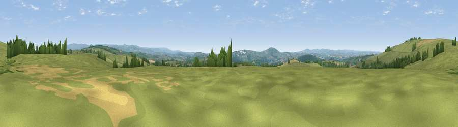

Viewpoint near Milton Abbot
#18734 in England · top 36% of its area beats it · near Milton Abbot · access?Where it is
The exact computed spot (SX 42475 78875). Click the marker for map links.
Public access: no public right of way or access land is recorded at this exact spot — it may be on private land. Computed from Natural England's CRoW access layer and OpenStreetMap rights of way — not the legal definitive map. Always verify locally.
The view, rendered

A 360° render of this exact spot computed from the terrain model, tree cover and land cover — summer colours, afternoon light, calibrated against photographs of famous viewpoints. Real trees, hedges and buildings will differ in detail.
The panorama
Grey silhouette: terrain skyline in each direction (720 bearings, Earth curvature and refraction included). Dashed green: skyline with trees (+15 m) and buildings (+8 m) as obstacles. Blue strip: how far the ground is visible on each bearing.
Where the view opens
Wedge length = distance to the farthest visible ground on that bearing (vegetation-aware). Rings at 10, 25 and 50 km.
What fills the view
81% grassland · 12% woodland · 7% cropland ·
Angular shares of the visible panorama (visual magnitude), not map area. Landscape diversity 0.28 (0–1 Shannon).
Key numbers
More beautiful places nearby
The staircase of upgrades: each row has a higher view potential than everything closer. Driving times are estimates from straight-line distance, calibrated against real road routing — check an actual route before setting out.
| Place | Direction | Drive | Score |
|---|---|---|---|
| Viewpoint near Milton Abbot | SW · 1 km | ~4 min | 63.9 |
| Viewpoint near Chillaton | N · 2 km | ~5 min | 65.2 |
| Brent Tor | ENE · 5 km | ~11 min | 73.4 |
| Hingston Down | S · 8 km | ~15 min | 78.3 |
| Kit Hill | SSW · 9 km | ~18 min | 80.3 |
| Viewpoint near Dousland | ESE · 16 km | ~28 min | 81.0 |
| Viewpoint near Lee Moor | SE · 21 km | ~35 min | 82.7 |
| Viewpoint near Downderry | SSW · 26 km | ~42 min | 83.5 |
50.58830, -4.22669 · source: screening · position refined by local search. Computed location — check access rights before visiting.